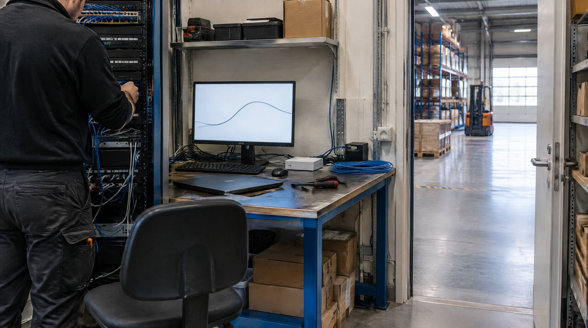

De fortæller dig om ROAS på 8,4. De fortæller dig om konverteringsraten på 4,2%. De fortæller dig om SEO-strætegien og e-mail-automationen.
De fortæller dig ikke om WMS'et. Ikke om fragtforhandlingerne. Ikke om inventory accuracy-målet på 99,3%. Ikke om de 4 måneders arbejde med at dokumentere plukkeprocedurerne.
Det er det usynlige fundament. Her er hvad der faktisk sker bag curtainen.
Ting 1: De har et WMS, og det er integreret
Ingen top-webshop over 100 ordrer/dag styrer lageret i Excel. De har et WMS der er realtids-integreret med webshop, fragtleverandør og regnskabssystem.
Det betyder: når en ordre lægges, reduceres saldo på webshoppen automatisk. Når en vare modtages, er den tilgængelig for salg inden for minutter.
Ting 2: De har forhandlet fragtpriser
De betaler ikke listepris til fragtleverandøren. De forhandler mindst en gang om året med mængdetal. Typisk besparelse: 8,15% vs. ikke-forhandlet pris.
👉 Har du samme udfordring? Se hvordan SmartPack løser det i praksis
For en webshop med 500.000 kr./år i fragtomkostninger = 40.000-75.000 kr./år i besparelse.
Ting 3: De har dokumenterede processer
De har SOP-dokumenter (Standard Operating Procedures) for alle kritiske workflows: pluk, pak, modtagelse, returnering. En ny medarbejder kan være produktiv inden for 1-2 dage.
Ting 4: De måler OTD per fragtleverandør
De ved ikke bare at "fragtleverandøren leverer hurtigt". De ved at GLS leverer til Jylland med 94,2% OTD og til København med 97,1% OTD. Og de bruger den data i forhandlinger.
Ting 5: De har et cycle-count-program
De tæller ikke alt en gang om året. De tæller 5-10 SKU'er per dag, systematisk. Det betyder at inventory accuracy altid er over 99%, og de opdager fejl inden de påvirker ordrer.
Ting 6: De har altid min. to fragtleverandører aktive
Backup er ikke en ekstraomkostning. Det er risikostyring. Når den primære leverandør har kapacitetsproblemer på Black Friday, ruter de til leverandør to. Kunden mærker ingenting.
Ting 7: De har en returprocedure der skaber LTV
De gør ikke returnering svært. De gør det nemt, og måler på gen-købsrate efter returnering. Kunder der returnerer nemt og hurtigt køber igen. De ved det. De måler det.
Ting 8: De planlægger peak 8 uger før
Black Friday-kapaciteten er booket i september. Temp-arbejdskraft kontaktet i oktober. Emballagebeholdning fordoblet i november uge 1. Der er ingen surprises.
Hvad det samlet koster at IKKE gøre disse 8 ting
| Ting | Hvad det koster ikke at gøre det (300 ordrer/dag) |
|---|---|
| Ingen WMS | ~14.000 kr./måned i fejlomkostninger |
| Ikke forhandlet fragt | ~6.000 kr./måned ekstra fragtomkostning |
| Ingen SOP | 2× oplæringstid = 3.000 kr./ny ansat |
| Ikke målt OTD | Blindt på 3% OTD-tab, ikke opdaget |
| Ingen cycle count | Inventory accuracy 96% = phantom inventory |
| Én fragtleverandør | Single point of failure ved BF |
| Svær returnering | Gen-købsrate -15 til -25% |
| Ingen peak-planlsegning | BF fejlrate 3,5× normal |
SmartPack understøttelse
SmartPack er platformen bag alle 8 punkter. Fra WMS og multi-carrier integration til realtids-KPI'er og cycle-count-program. Det er ikke et system du "tilføjer" til din drift, det er infrastrukturen der gør det muligt.